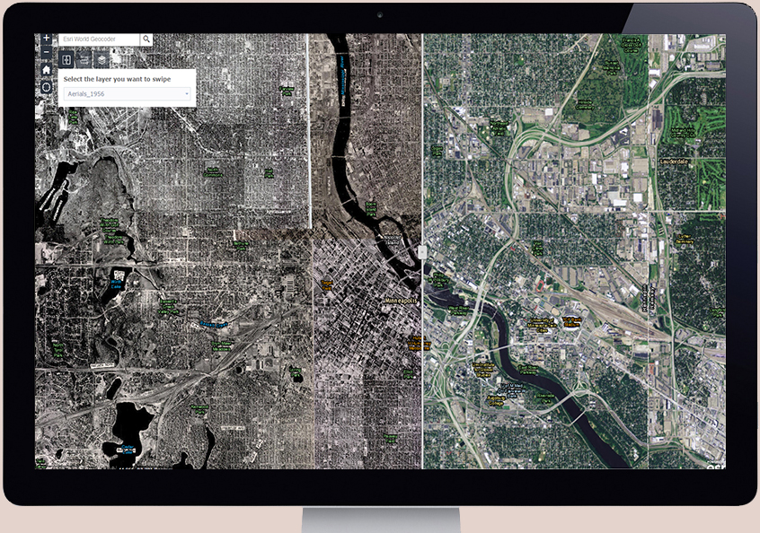

Georeferencing Historical Aerials
Minneapolis & Saint Paul Area
This web application using ArcMap and ArcGIS Online shows georeferenced 1956 aerials of Minneapolis and St. Paul. The objective of this project was to build a prototype in order to garner resources to launch a larger project to georeference historical aerial photos of multiple years for the entire seven-county Twin Cities metropolitan area. I had to find the best practices for georeferencing the images without distortion, publishing the aerials, as well as create an appealing web application. View 1956 Aerials web app here
Software used: ArcGIS for Desktop, ArcGIS for Server, ArcGIS Online
